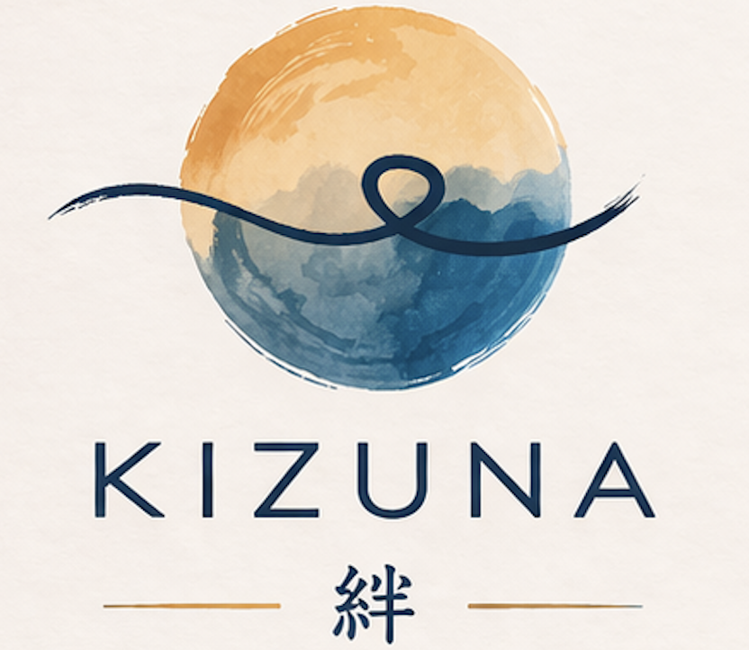

Lichaam en geest zijn onlosmakelijk met elkaar verbonden. Wanneer het zenuwstelsel overbelast raakt, uiten spanningen zich niet alleen mentaal, maar ook fysiek. Hartcoherentie is een wetenschappelijk onderbouwde methode om via een specifiek ademhalingsritme het autonoom zenuwstelsel weer in balans en tot rust te brengen.
Wanneer we chronisch 'hoog' of ontregeld ademen, kan zich dat uiten op verschillende vlakken:
Wil je graag op een toegankelijke manier ontdekken wat ademhaling voor jouw rust en zenuwstelsel kan betekenen? Tijdens het kennismakingsmoment bieden we deze interactieve sessie volledig gratis aan (normale waarde €35).
Wat houdt deze sessie in?
Deze groepssessie vormt inhoudelijk de eerste stap (Sessie 1) van het volledige traject. We duiken in de werking van het zenuwstelsel en sluiten af met een eerste ademhalings- en bewustwordingsoefening.
📍 Locatie: Praktijk Kizuna, Dilbeek
🗓️ Datum: 28 november om 12:30
Het traject is zo opgebouwd dat je stap voor stap leert begrijpen wat er in je lichaam gebeurt én je de juiste vaardigheden aangeleerd krijgt om zelfstandig aan de slag te gaan. We starten met een heldere theoretische basis in groep, gevolgd door drie individuele sessies op maat. Bij kinderen en jongeren worden het tempo en de insteek afgestemd op hun leefwereld en ontwikkelingsniveau, waarbij ouders optioneel nauw worden betrokken.
We starten in groep met een toegankelijke en wetenschappelijk onderbouwde introductie tot hartcoherentie. Tijdens dit uur ontdek je wat hartcoherentie precies is en welke fysieke en mentale voordelen het je brengt. We duiken in de werking van je autonoom zenuwstelsel en de rol van de nervus vagus bij herstel. Deze eerste sessie vormt het nodige fundament voor het verdere traject en bevat weinig zware inhoudelijke oefeningen, maar we sluiten wél af met een eerste waardevolle bewustwordingsoefening rond jouw ademhaling.
💡 Goed om te weten: Het deelnemen aan deze eerste groepssessie verplicht je tot niets. Je kan deze introductie volledig vrijblijvend volgen om te ontdekken of hartcoherentie en de methodiek bij jou passen.
📅 Eerstvolgende data in de praktijk (om 19:00u):
📩 Inschrijven: Stuur een e-mail naar vandenbosschekaat@outlook.com met je naam en de gewenste datum.
Volg je de theoretische kennismaking liever individueel? Dat kan uiteraard ook. Neem hiervoor gerust contact op via e-mail.
In deze eerste individuele sessie gaan we concreet met jouw persoonlijke situatie aan de slag. Met behulp van professionele bio-feedback apparatuur bepalen we jouw optimale ademritme (of dat van je kind). Je krijgt gerichte handvatten en een op maat gemaakt ademschema mee om thuis zelfstandig te beginnen oefenen.
We bespreken hoe het thuisoefenen is verlopen. Wat ging er vlot en waar ondervond je nog weerstand of stress? We voeren opnieuw een meting uit en sturen bij waar nodig (qua ademfrequentie, focus of houding) zodat de techniek steeds natuurlijker en effectiever aanvoelt.
Tijdens deze afrondende sessie kijken we naar de vooruitgang en de impact die de oefeningen hebben gehad op je dagelijks leven. We maken een concreet plan om hartcoherentie blijvend te integreren in je routine. Ook bespreken we ondersteunende hulpmiddelen en bio-feedback tools, zoals bijvoorbeeld de tactiele adembegeleider Moonbird.
Betaling kan via Payconiq of contant na afloop van elke sessie.